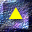

Red Hat Linux Unleashed Table of Contents
1
Introduction to Linux
2
Types of Linux Available
3
Installing and Updating Linux
4
LILO
5
Odds and Ends
6
Getting Started with Linux
7
Basic Linux Commands and Utilities
8
The Linux File System
9
Introduction to the GNU Project Utilities
10
Using bash
11
Using pdksh
12
Using tcsh
13
Shell Programming
14
Using Communication Tools Under Linux
15
Using the Linux Documentation
16
Text Editors
17
groff
18
geqn and gtbl
19
TeX
20
Printing
21
Installing X Window on Linux
22
Configuring X Window on Linux
23
Using Motif
24
OPEN LOOK and OpenWindows
25
Ghostscript
26
gawk
27
Programming in C
28
Programming in C++
29
Perl
30
Introduction to Tcl and Tk
31
Other Compilers and Languages Ported to Linux
32
Motif for Programmers
33
Programming XView Applications
34
Smalltalk/X
35
Mathematics on Linux
36
Database Products for Linux
37
System Administration Basics
38
Devices and Device Administration
39
Users and Logins
40
Processes
41
SCSI Device Support
42
Networking
43
UUCP
44
Installing Mail and News
45
Network Security
46
Setting Up an Internet Site
47
Setting Up an FTP and Anonymous FTP Site
48
Configuring a WAIS Site
49
Setting Up a Gopher Service
50
Configuring a WWW Site
51
Source Code Control
52
Working with the Kernel
53
Writing Device Drivers
54
Network Programming
55
Adding Server Support for PEX
56
Using Mosaic and Netscape
57
DOSemu
58
The Wine Project
59
Using HylaFAX, sendfax, and mgetty
60
Linux Games
A
Linux FTP Sites and Newsgroups
B
Commercial Vendors for Linux
C
The Linux Documentation Project
D
The GNU General Public License
E
Copyright Information
